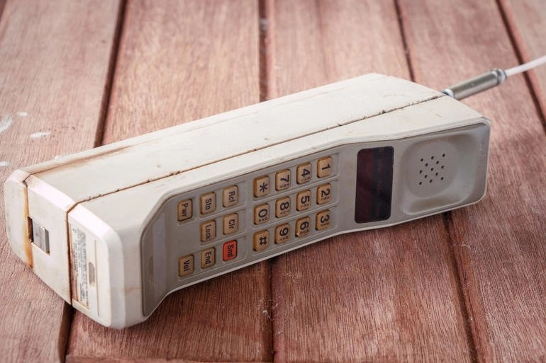
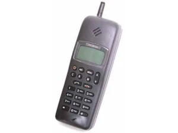
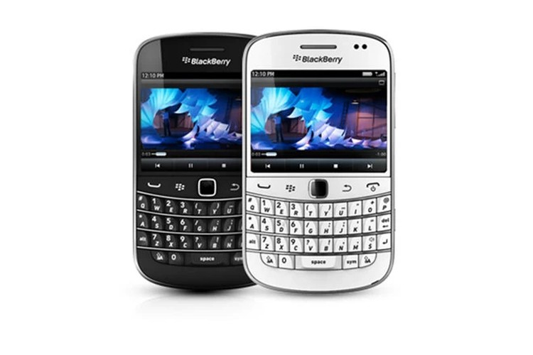
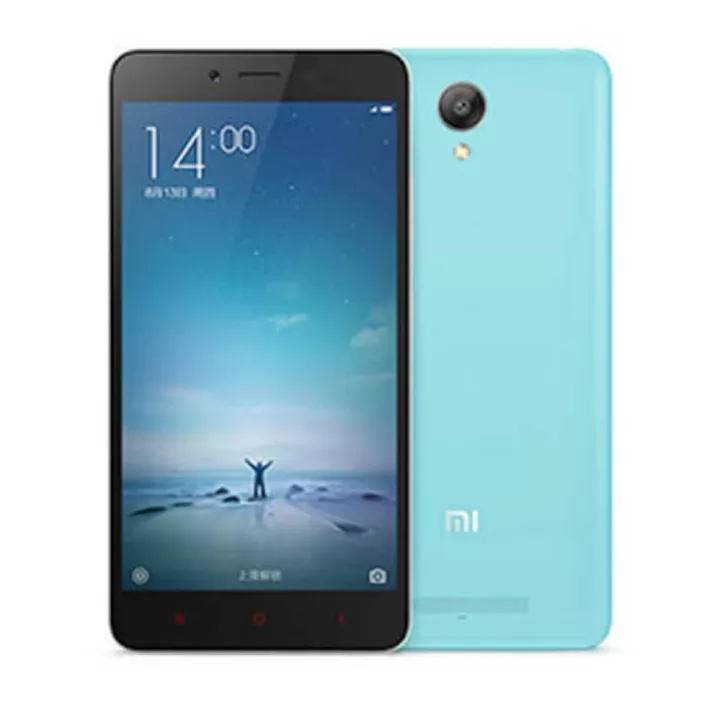

Penemu telepon genggam yang pertama adalah Martin Cooper, seorang karyawan Motorola pada tanggal 03 April 1973, walaupun banyak disebut-sebut penemu telepon genggam adalah sebuah tim dari salah satu divisi Motorola (divisi tempat Cooper bekerja) dengan model pertama adalah DynaTAC. Ide yang dicetuskan oleh Cooper adalah sebuah alat komunikasi yang kecil dan mudah dibawa bepergian secara fleksibel. Cooper bersama timnya menghadapi tantangan bagaimana memasukkan semua material elektronik ke dalam alat yang berukuran kecil tersebut untuk pertama kalinya. Namun akhirnya sebuah telepon genggam pertama berhasil diselesaikan dengan total bobot seberat dua kilogram. Untuk memproduksinya, Motorola membutuhkan biaya setara dengan US$1 juta. Pada tahun 1983, telepon genggam portabel berharga US$4 ribu (Rp36 juta) setara dengan US$10 ribu (Rp90 juta).
Telepon genggam atau handphone pada generasi pertama ditemukan pada tahun 1973 dan penemunya adalah Martin Cooper. Pada generasi pertama ini telepon genggam sering disebut juga dengan generasi 1G dan dikenal juga dengan istilah AMPS (frekuensi antara 825 Mhz hingga 894 Mhz). Oleh karena itu, telepon genggam generasi ini bisa dibilang bersifat analog. Berbicara tentang bobot atau berat dari telepon genggam generasi pertama, maka beratnya sekitar 2,5 pon atau 1,1 kg. Maka dari itu, handphone generasi pertama merupakan telepon seluler yang cukup berat. Sedangkan, panjang dari handphone sekitar 10 inci atau 25 cm, sehingga sulit untuk dimasukkan ke dalam kantong baju atau celana. Baterai yang ada pada handphone generasi pertama hanya mampu bertahan selama 20 menit saja, sehingga kita tak bisa menggunakannya terlalu lama. Telepon genggam yang diciptakan oleh Martin Cooper ini dikenal dengan nama DynaTAC (Dynamic Adaptive Total Area Coverage).
Generasi berikutnya adalah generasi kedua (sekitar tahun 1990-an) dari sejarah perkembangan handphone atau telepon genggam. Teknologi yang semakin maju membuat telepon genggam generasi ini semakin canggih. Kecanggihan itu terlihat pada penggunaan chip pada telepon genggam dan menggunakan teknologi 2G. Generasi telepon genggam ini diperkirakan muncul sekitar tahun 1990-an. Pada saat itu, negara Amerika Serikat sudah menggunak tekonologi CDMA(Code Division Multiple Access). Sementara itu, di Eropa menggunakan teknologi GSM GSM (Global System for Mobile Telecommunications). Selain penggunaan chip pada telepon genggam, pada generasi ini sinyal yang tadinya analog berubah menjadi sinyal digital. bahkan fitur dari telepon genggam generasi ini bukan hanya bisa melakukan panggilan saja, tetapi bisa mengirim pesan dan panggilan tunggu. Telepon genggam generasi ini bisa kita temukan pada Nokia 1011, Motorola International 3200, Motorola StarTAC, dan Nokia 9000 Communicator.
Memasuki tahun 2000-an berarti memasuki telepon genggam generasi ketiga yang di mana penggunaan teknologi semakin canggih, yaitu 3G. Dengan penggunaan teknologi 3G, maka jangkauan sinyal pada telepon genggam semakin luas, sehingga komunikasi semakin nyaman. Pada dasarnya dalam dunia telekomunikasi sinyal 3G ini terdapat 3 standar, yaitu EDGE (Enhanced Data Rates for GSM Evolution), Wideband-CDMA, dan CDMA 2000. Tidak hanya itu, telepon genggam generasi ketiga mulai dimasukkan beberapa sistem operasi, sehingga sering dikenal sebagai smartphone atau ponsel pintar. Oleh sebab itu, fitur yang dimiliki oleh telepon genggam generasi ketiga bisa dibilang mendekati fungsi komputer. Pada umumnya, sistem operasi yang digunakan, seperti Android, iOS, Symbian, dan Windows Mobile.
Generasi terakhir dari perkembangan telepon genggam adalah generasi IV atau lebih dikenal dengan teknologi Fourth Generation (4G). Selain itu, teknologi yang ditawarkan pada telepon genggam generasi ini berupa dapat terhubung teknologi nirkabel, seperti Wireless Broadband (WiBro), 802.16e, CDMA, wireless LAN, Bluetooth, dan sebagainya. Oleh karena itu, pengguna yang menggunakan telepon genggam generasi ini akan mendapatkan beberapa keuntungan, seperti pengguna bisa menggunakan sistem operasi kapan saja, memiliki kecepatan tinggi, jangkauan sinyal bisa mencapai global, dan lain-lain. Bahkan, pengguna bisa bermain game secara online, menonton film, hingga menggunakan fitur multimedia lainnya. Handphone atau telepon genggam generasi IV yang pertama adalah HTC Corporation.
